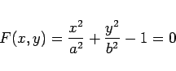
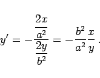

Inhalt Index DeskTop Bronstein

 Differentialrechnung Differentiation von Funktionen einer Veränderlichen Differentiationsregeln für Funktionen einer Veränderlichen Grundregeln für das Differenzieren
Differentialrechnung Differentiation von Funktionen einer Veränderlichen Differentiationsregeln für Funktionen einer Veränderlichen Grundregeln für das Differenzieren


Eine Funktion y =f(x) sei implizit durch die Gleichung F(x,y)=0 gegeben. Unter Beachtung der Differentiationsregeln für Funktionen mehrerer Veränderlicher erhält man durch Differentiation nach x
falls die partielle Ableitung Fy von Null verschieden ist.
| Beispiel |
|
Die Gleichung 

|